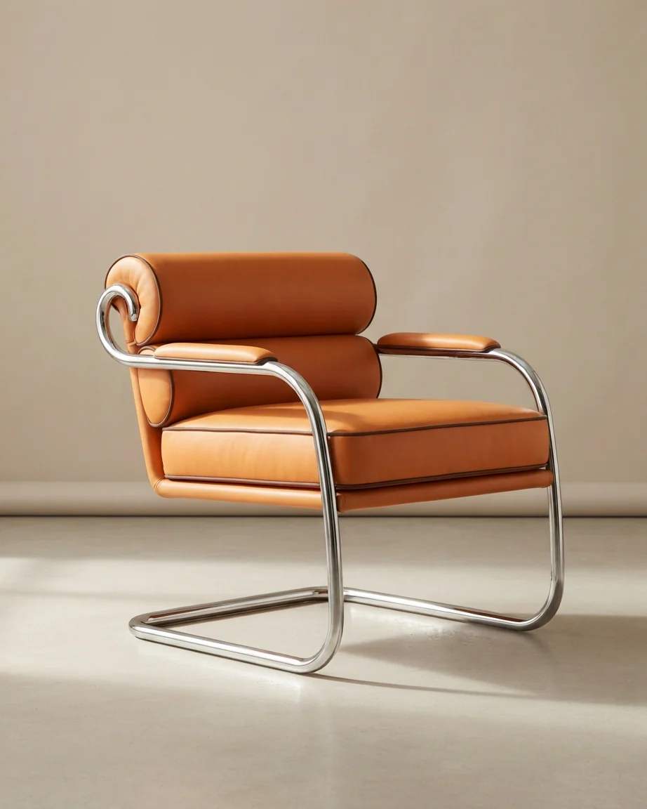
Серия Caffè · Для кофеен
Swell
Кресло для кофейни ручной работы
Кресло для кофейни, нарисованное одной линией: труба из зеркального хрома поднимается в подлокотники, обвивает толстую спинку-валик и уходит в мягкие полозья. Отдельная глубокая подушка сиденья, тонкий контрастный кант по всем краям.
Кожаот 35 000 ₽
Выбран цвет: Мандариновая кожа
- Размеры (Ш × Г × В)
- 600 × 620 × 760 мм
- Высота сиденья
- 450 мм
- Каркас
- Металл
- Обивка
- Мандариновая кожа, Оливковая кожа, Тёмно-синяя кожа. Возможен свой материал
- Ткани
- Коллекции Noble, Fiori, Bohemia, Rio
- Гарантия
- 12 месяцев, ГОСТ 16371-2014
- Производство
- Фабрика полного цикла ГК «Фабрикант»
- Доставка
- По России и СНГ
Изготавливаем под ваш проект: точные размеры, обивку и стоимость фиксируем в персональном расчёте.
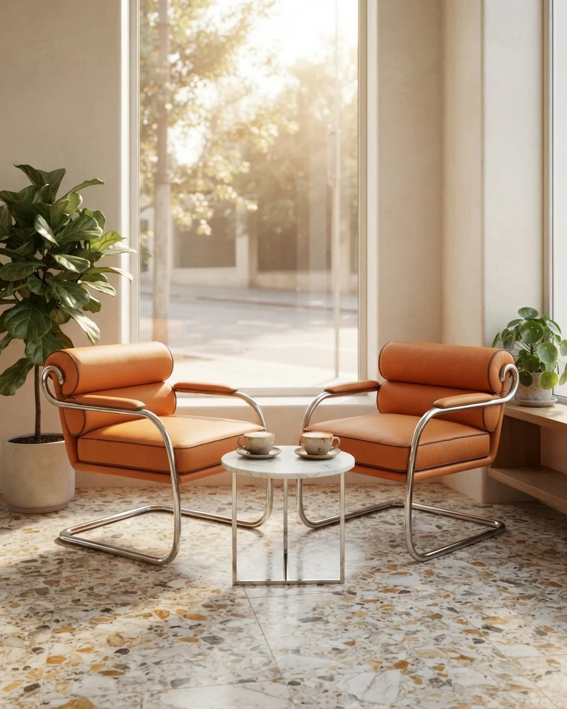
Другие модели серии Caffè
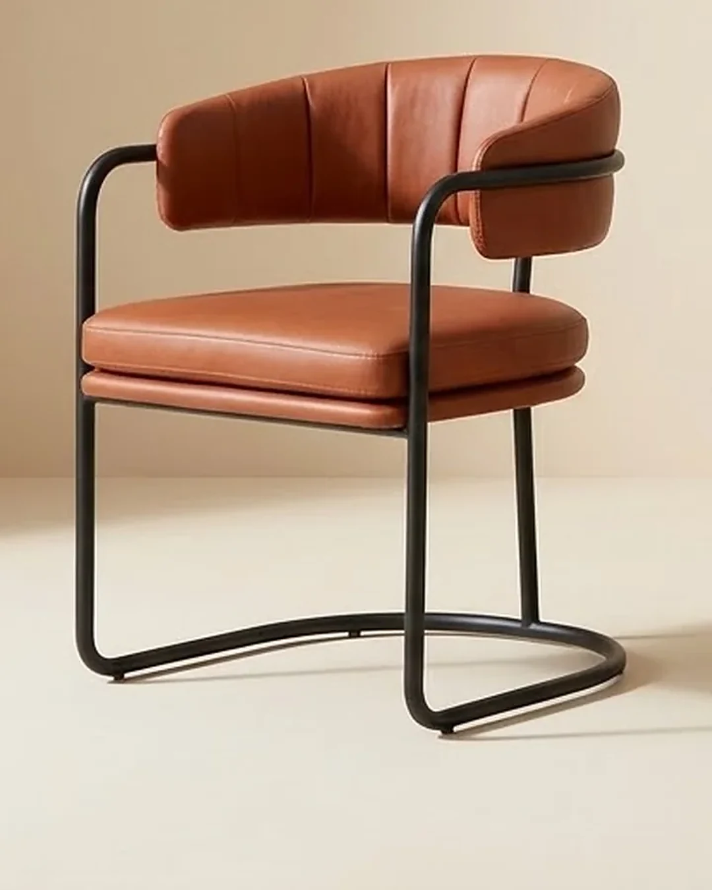
TideКресло для кофейни · от 26 000 ₽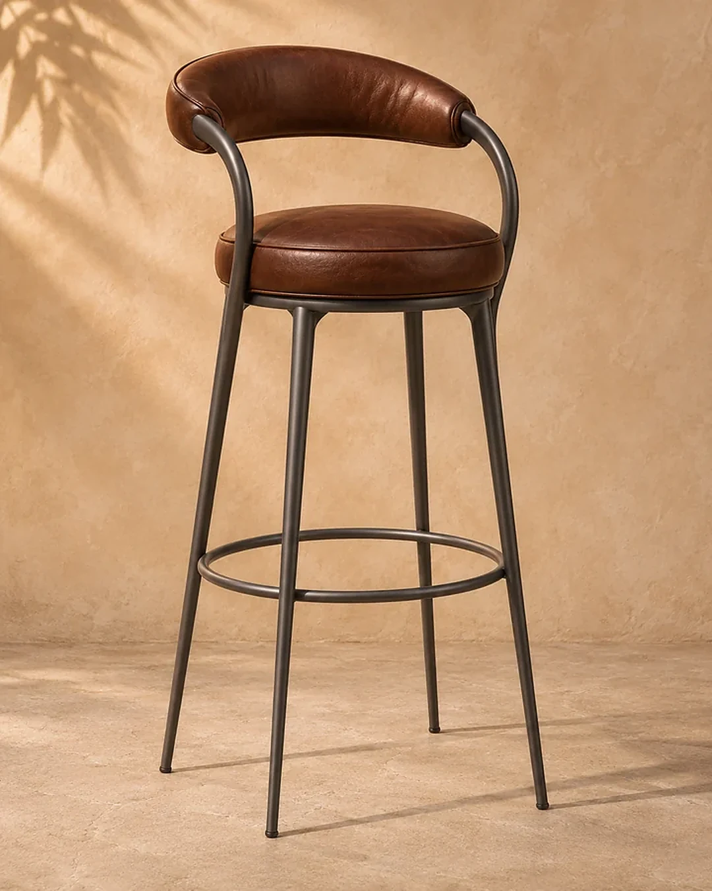
PierБарный стул · от 35 000 ₽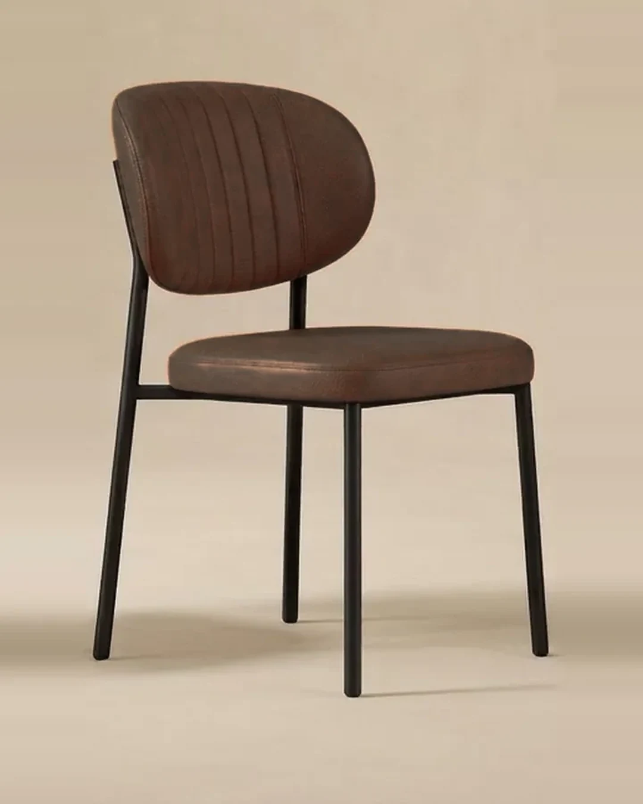
RippleОбеденный стул · от 26 000 ₽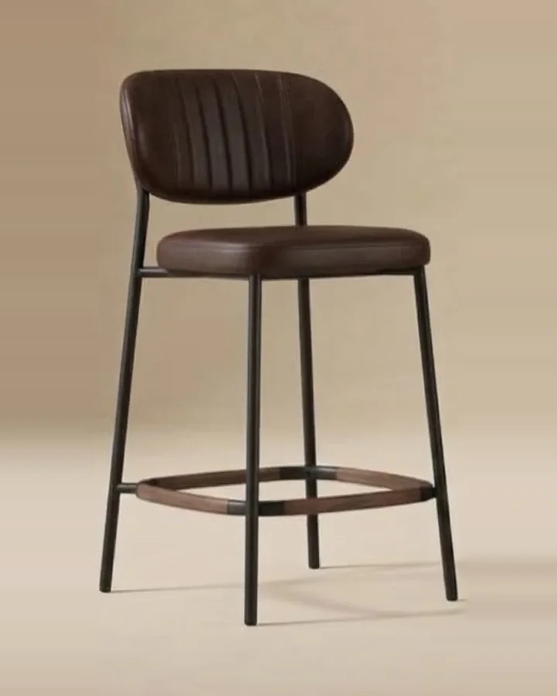
Ripple BarПолубарный стул · от 26 000 ₽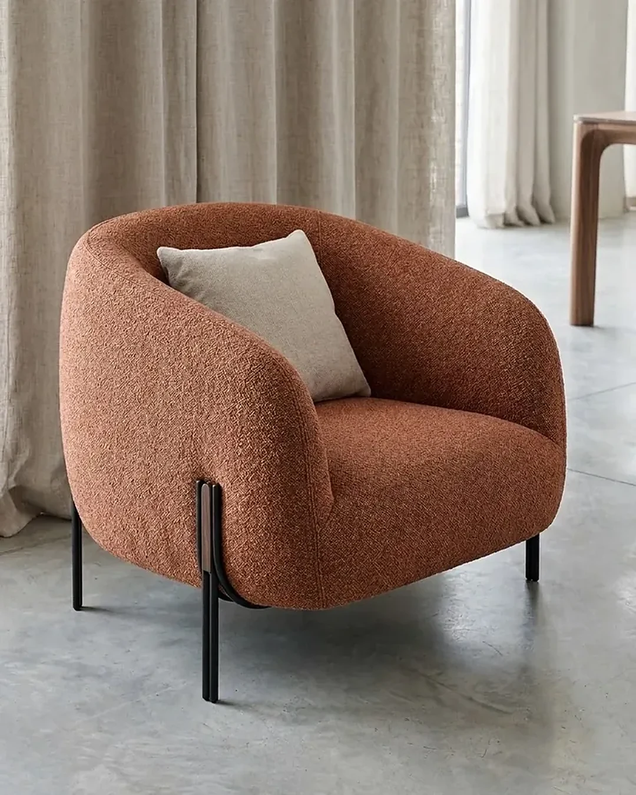
CoveЛаунж-кресло · от 56 000 ₽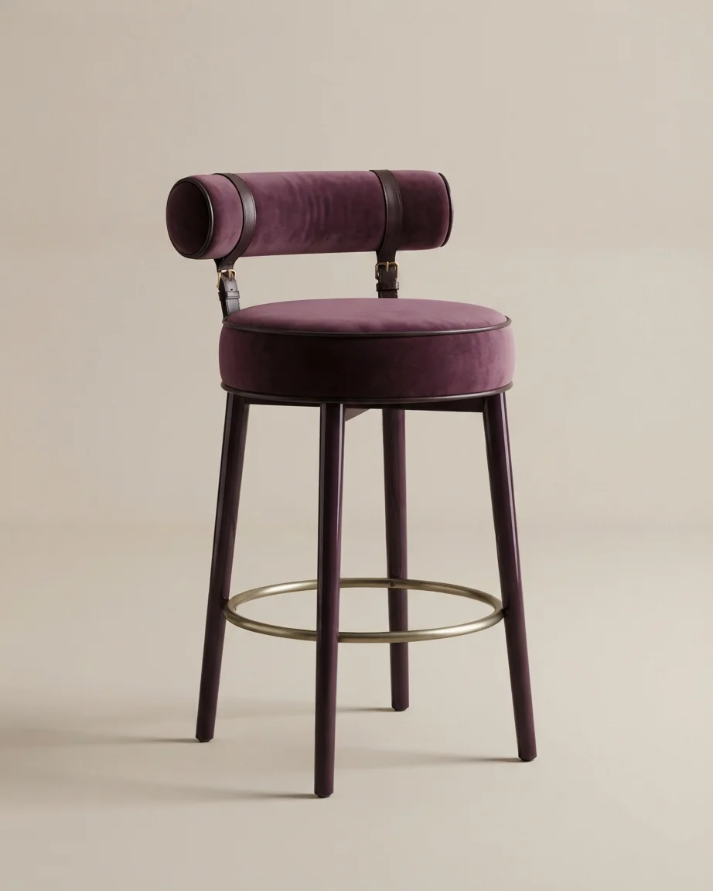
JettyБарный стул · от 26 000 ₽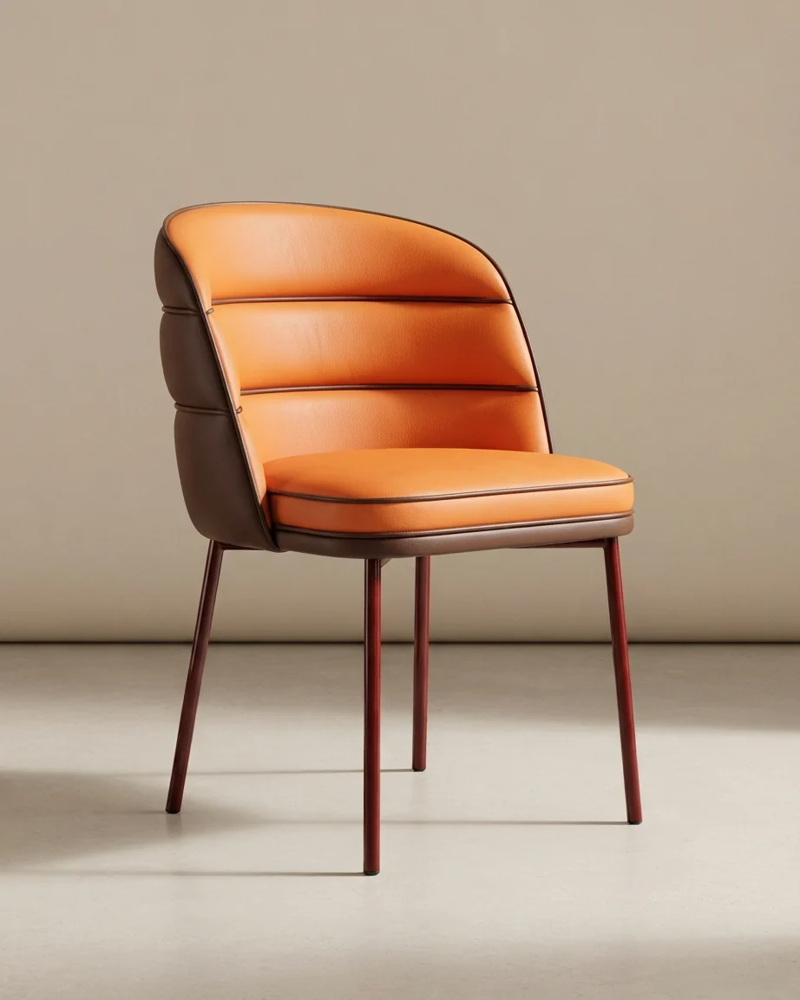
TierОбеденный стул · от 35 000 ₽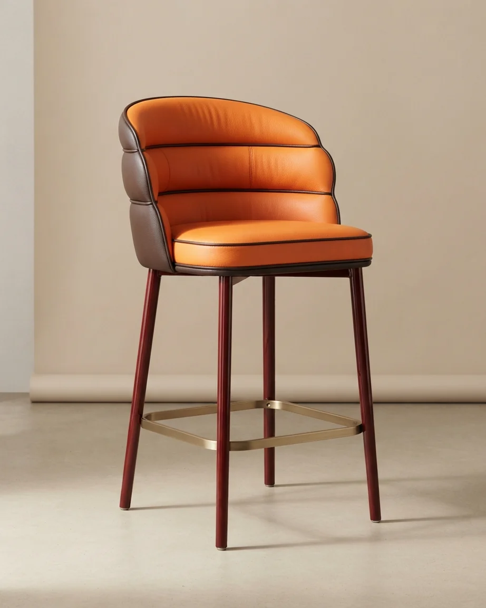
Tier BarПолубарный стул · от 35 000 ₽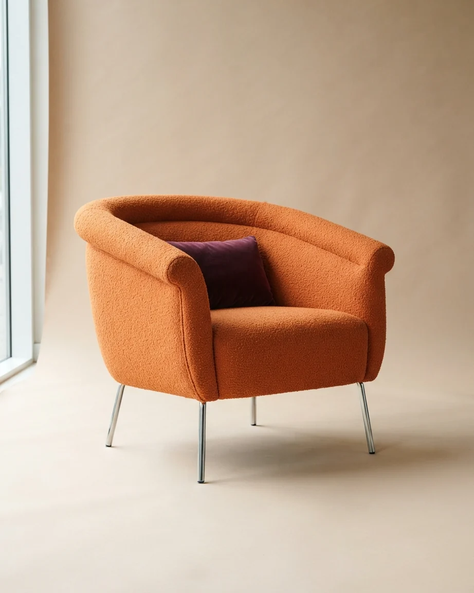
LagoonЛаунж-кресло · от 26 000 ₽